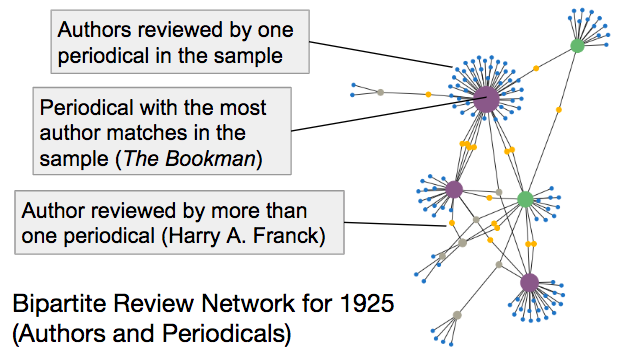
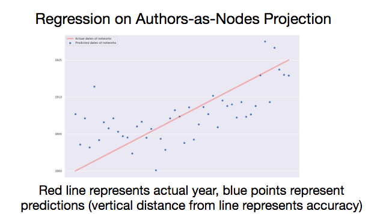
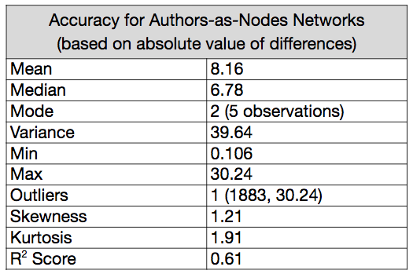
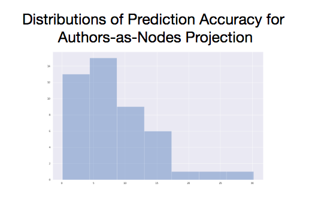
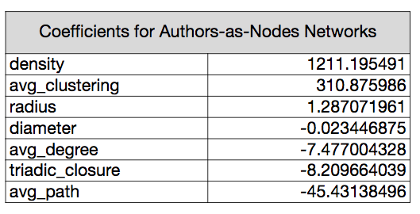
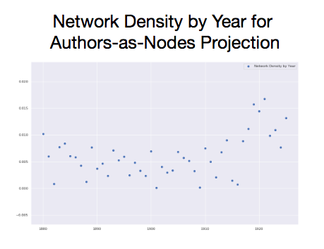

class: middle *** # Worth by Association: ## Gender in <em>The New York Times Book Review</em>, and Beyond *** <br/> <br/> ### Matthew Lavin ### Clinical Assistant Professor of English ### Director of Digital Media Lab ### University of Pittsburgh ### Fall 2019 --- class: top *** # Research Questions: General *** - ## Did book reviews stop mediating culture hierarchies, or did their approaches persist in subtler form? - ## How can we best understand the mechanics of any observed mediations? - ## In what directions did mediations nudge readers, and how did interventions change over time? <hr class="end"/> --- class: top *** # Research Questions: <em>NYTBR</em> *** - ## Can machine learning predict the presumed gender of the book's author? - ## If so, what do the terms informing predictions tell us about the gendering of review language? <hr class="end"/> --- class: top *** # Study Design: Data *** - ## <em>The New York Times Book Review</em> - ## Sample of Single-work Reviews, January 1, 1905-December 31, 1925 - ## Drawn from a larger set of approximately 27,000 articles - ## Approximately 2,800 book reviews - ## Genders of reviewed work’s author tagged “assumed male,” “assumed female,” “multi,” or “unknown” - ## Assumed means assumed by the reviewer <hr class="end"/> --- class: top *** # Study Design: Methods *** - ## Text Processing - ## Machine Learning: random training and test (hold out cross-validation) - ## Resampling of 1,000 different randomized training set and test set membership combinations - ## Feature Selection Scenarios <hr class="end"/> --- class: top *** # Feature Selection Scenarios *** ## 1. No terms removed ## 2. Stopwords removed ## 3. Stopwords, gender nouns, and titles removed ## 4. Stopwords, gender nouns, and titles removed, along with common first names <hr class="end"/> --- class: top *** # Scenario Performance *** <table class="table table-bordered table-hover table-condensed"> <tbody><tr> <th>Features Removed</th> <th>F1 (F)</th> <th>Precision (F)</th> <th>Recall (F)</th> <th>F1 (M)</th> <th>Precision (M)</th> <th>Recall (M)</th> <th>Accuracy</th> </tr> <tr> <td>None</td> <td>0.776</td> <td>0.773</td> <td>0.781</td> <td>0.899</td> <td>0.901</td> <td>0.897</td> <td>86.10%</td> </tr> <tr> <td>Stopwords</td> <td>0.712</td> <td>0.687</td> <td>0.743</td> <td>0.863</td> <td>0.881</td> <td>0.848</td> <td>81.50%</td> </tr> <tr> <td>Stopwords, gender nouns, and gendered titles</td> <td>0.593</td> <td>0.551</td> <td>0.649</td> <td>0.793</td> <td>0.829</td> <td>0.762</td> <td>72.60%</td> </tr> <tr> <td>Stopwords, gender nouns, gendered titles, and forenames</td> <td>0.581</td> <td>0.538</td> <td>0.638</td> <td>0.786</td> <td>0.823</td> <td>0.754</td> <td>71.70%</td> </tr> </tbody></table> <hr class="end"/> --- class: top **** # Scenario 1: Top Terms *** <table class="table table-bordered table-hover table-condensed"> <tbody><tr> <td style="border:0;" colspan="2">Female Label Coefficients</td> <td style="border:0;" colspan="2">Male Label Coefficients</td> </tr> <tr> <th>Term</th> <th>Score</th> <th>Term</th> <th>Score</th> </tr> <tr> <td>Her</td> <td>4.78</td> <td>His</td> <td>2.07</td> </tr> <tr> <td>She</td> <td>3.82</td> <td>Mr</td> <td>1.73</td> </tr> <tr> <td>Mrs</td> <td>2.12</td> <td>The</td> <td>1.08</td> </tr> <tr> <td>Miss</td> <td>1.51</td> <td>Of </td> <td>0.78</td> </tr> <tr> <td>Woman</td> <td>1.23</td> <td>That</td> <td>0.49</td> </tr> </tbody></table> <hr class="end"/> --- class: top **** # Scenario 4: Top Terms *** <table class="table table-bordered table-hover table-condensed"> <tbody><tr> <td style="border:0;" colspan="2">Female Label Coefficients</td> <td style="border:0;" colspan="2">Male Label Coefficients</td> </tr> <tr> <th>Term</th> <th>Score</th> <th>Term</th> <th>Score</th> </tr> <tr> <td>Child</td> <td>1.19</td> <td>Dr</td> <td>0.67</td> </tr> <tr> <td>Story</td> <td>1.06</td> <td>British</td> <td>0.64</td> </tr> <tr> <td>Novel</td> <td>0.96</td> <td>Volume</td> <td>0.61</td> </tr> <tr> <td>Heroine</td> <td>0.95</td> <td>Essay</td> <td>0.58</td> </tr> <tr> <td>Home</td> <td>0.81</td> <td>Prof</td> <td>0.52</td> </tr> </tbody></table> <hr class="end"/> --- class: top *** # Interpretive Groupings ### for Female-Leaning Coefficients (Top 50 Lemmas) *** <table class="term-groups"> <tbody> <tr> <th>Category</th> <th>Lemmas (alphabetized)</th> </tr> <tr> <td>Author and Text</td> <td>Book, character, fiction, heroine, letter, novel, picture, plot, story</td> </tr> <tr> <td>Domestic and Social</td> <td>Background, child, custom, family, home, house, household, queen, social, society, widow</td> </tr> <tr> <td>Feminized Virtues</td> <td>Charming, clever, dear, feminine, friend, life, little, lovely, young</td> </tr> <tr> <td>Marriage and Courtship</td> <td>Handsome, heart, marriage, married, meet, romance</td> </tr> <tr> <td>Time</td> <td>Day, year</td> </tr> <tr> <td>Economic Class</td> <td>Labor, poor</td> </tr> <tr> <td>Other</td> <td>Come, color, know, lace, moor, real, type, vivid, want, wear, Wharton</td> </tr> </tbody></table> <hr class="end"/> --- class: top *** # Interpretive Groupings ### for Male-Leaning Coefficients (Top 50 Lemmas) *** <table class="term-groups"> <tbody><tr> <th>Category</th> <th>Lemmas (alphabetized)</th> </tr> <tr> <td>Author and Text</td> <td>Drama, essay, paper, play, translation, volume</td> </tr> <tr> <td>Conquest and War</td> <td>Army, battle, captain, empire, general, military, sea, ship</td> </tr> <tr> <td>Geographic Locales</td> <td>British, Germany, Japanese</td> </tr> <tr> <td>Scholarship and Science</td> <td>College, dr, prof, science, scientific, Shakespeare, theory, university</td> </tr> <tr> <td>Government and Policy</td> <td>Constitution, government, law, nation, national, policy, political, president, state, united</td> </tr> <tr> <td>Procedural</td> <td>Fact, history, lie, opinion, present, second, series</td> </tr> <tr> <td>Uncategorized</td> <td>Business, economic, fr, ill, jame, mile, sir</td> </tr> </tbody></table> <hr class="end"/> --- class: top *** # Interpretation *** - ## The “superficial” layers of gender norming tell us more than one might think - ## Many of the gender identity assumptions we make today were encoded in book reviews - ## Men may write about female people/characters and vice versa, but mentions of these doesn’t add enough noise to confound the model <hr class="end"/> --- class: top *** # Interpretation *** - ## When the most superficially gendered features are removed, topical norms still predict gender - ## Presumed author gender is associated with specific topical vocabularies - ## Form and procedural lemmas seem present as well <hr class="end"/> --- class: top *** # Interpretation *** - ## Do reviews <em>reflect</em> gender norms for a book’s topic, or do they <em>amplify</em> these boundaries? - ## Traditional literary studies says the doctrine of separate spheres breaks down, 1900-1930 - ## Other DH scholars (Jockers, Kirilloff, Mimno) have found word-level predictors for author and character gender in 19th-century fiction that support the traditional interpretation - ## Book reviews tell a different story, which suggests <em>amplification/distortion</em>, not reflection <hr class="end"/> --- class: top *** # Three Levels of Analysis *** - ## Individual level - ## Comparative level - ## Network level <hr class="end"/> --- class: top *** # Book Reviews as Affiliation Networks *** - ## Construct weighted bipartite graphs of periodicals and authors - ## Author mentions in periodicals is an NLP/NER task, so this is an approximation based on an author list - ## Each review in a periodical increases edge weight between - ## One network per year, 1880-1925 <hr class="end"/> --- class: top  --- class: top *** # Date Prediction Procedure *** - ## Project network to one mode (authors or periodicals) - ## Measure density, radius, diameter, triadic closure, average path length, average degree and average clustering coefficient of all nodes - ## Express all measures as the difference between the measure and the average measure from a set of random networks of identical size - ## Approach based on work co-authored by John Ladd (Northwestern) <hr class="end"/> --- class: top *** # Date Prediction Procedure *** - ## Use network measures as training features - ## Use network years as training labels - ## Linear regression, leave-one-out validation - ## Score accuracy and inspect feature coefficients <hr class="end"/> --- class: top  --- class: top  --- class: top  --- class: top  --- class: top  <hr class="end"/>